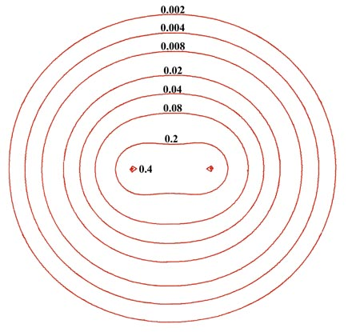
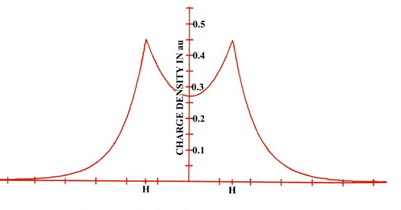

Fig. 6-2. A contour map of the electron density
distribution (or the molecular charge distribution) for H2
in a plane containing the nuclei. Also shown is a profile of the density
distribution along the internuclear axis. The internuclear separation is
1.4 au. The values of the contours increase in magnitude from the outermost
one inwards towards the nuclei. The values of the contours in this and
all succeeding diagrams are given in au; 1 au = e/ao3
= 6.749 e/Å3.